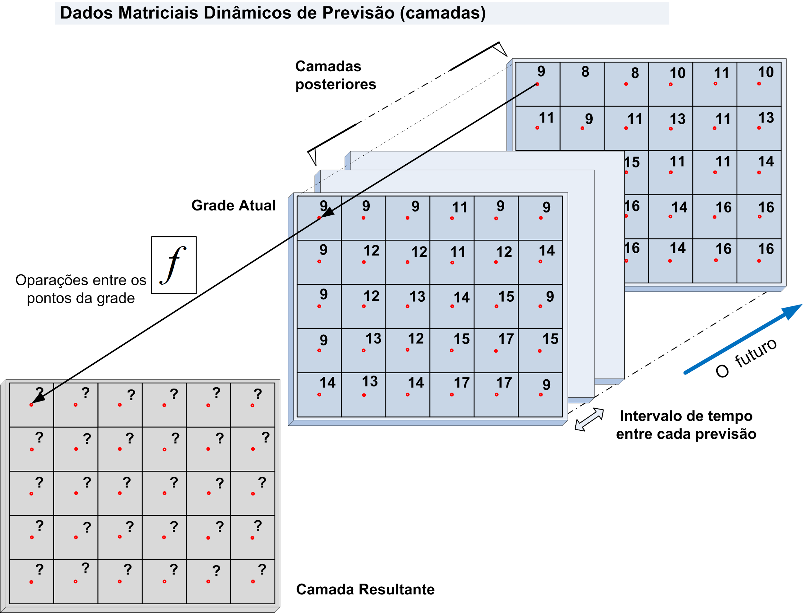

Operadores de Previsão
Operadores de previsão são operadores utilizados para obter estatísticas sobre os pontos da grade, produzindo um novo valor da grade de saída.
A Figura 3.32 ilustra um conjunto de camadas de um dado matricial dinâmico coletado sistematicamente para serem utilizados para obter um novo valor em cada ponto da grade a partir de um operador escolhido pelo usuário, como por exemplo calcular o mínimo, máximo, média etc.

Figura 3.32 – (a) Exemplo dos pontos de uma grade.
OBS: As camadas de um dado de previsão numérica de tempo produzida pelo CPTEC-INPE são atualizadas duas vezes ao dia, a zero horas e do meio dia.
Estes operadores são divididos em dois tipos: Previsão e Previsão por Intervalo. A descrição de cada tipo a seguir.
1- Previsão
Grupo de operadores que consideram os valores dos “pixels” dos dados matriciais de previsão no intervalo de tempo definido entre a data/hora atual e o valor de tempo informado no futuro.
SINTAXE GERAL:
grid.forecast.<operator>("<dynamic_data_grid>", "<time>")
onde:
- operator : min, max, mean, median, sum, standard_deviation, variance;
- dynamic_data_grid : String com o nome da série de dados matriciais .
- time : String com o intervalo de tempo, a partir da hora atual. Ver utilitário Unidades de tempo.
Segue a descrição de cada operador.
Previsão: Mínimo
Retorna os menores valores em cada ponto da grade sobre dados matriciais de previsão no intervalo de tempo definido entre a data/hora atual e o valor de tempo informado no futuro.
Sintaxe:
grid.forecast.min(“<dynamic_data_grid>”, “<time>”)
Exemplo: x = grid.forecast.min("precipitacao", "1d")
Previsão: Máximo
Retorna os maiores valores em cada ponto da grade sobre dados matriciais de previsão no intervalo de tempo definido entre a data/hora atual e o valor de tempo informado no futuro.
Sintaxe:
grid.forecast.max(“<dynamic_data_grid>”, “<time>”)
Exemplo: x = grid.forecast.max("precipitacao", "1d")
Previsão: Média
Retorna as médias dos valores em cada ponto da grade sobre dados matriciais de previsão no intervalo de tempo definido entre a data/hora atual e o valor de tempo informado no futuro.
Sintaxe:
grid.forecast.mean(“<dynamic_data_grid>”, “<time>”)
Exemplo: x = grid.forecast.mean("precipitacao", "1d")
Previsão : Soma
Retorna as somas dos valores em cada ponto da grade sobre dados matriciais de previsão no intervalo de tempo definido entre a data/hora atual e o valor de tempo informado no futuro.
Sintaxe:
grid.forecast.sum(“<dynamic_data_grid>”, “<time>”)
Exemplo: x = grid.forecast.sum("precipitacao", "1d")
Previsão : Mediana
Retorna as medianas dos valores em cada ponto da grade sobre dados matriciais de previsão no intervalo de tempo definido entre a data/hora atual e o valor de tempo informado no futuro.
Sintaxe:
grid.forecast.median(“<dynamic_data_grid>”, “<time>”)
Exemplo: x = grid.forecast.median("precipitacao", "1d")
Previsão: Desvio Padrão
Retorna os desvios padrões dos valores em cada ponto da grade sobre dados matriciais de previsão no intervalo de tempo definido entre a data/hora atual e o valor de tempo informado no futuro.
Sintaxe:
grid.forecast.standard_deviation(“<dynamic_data_grid>”, “<time>”)
Exemplo: x = grid.forecast.standard_deviation("precipitacao", "1d")
Previsão: Variância
Retorna as variâncias dos valores em cada ponto da grade sobre dados matriciais de previsão no intervalo de tempo definido entre a data/hora atual e o valor de tempo informado no futuro.
Sintaxe:
grid.forecast.variance(“<dynamic_data_grid>”, “<time>”)
Exemplo: x = grid.forecast.standard_deviation("precipitacao", "24h")
2- Previsão por intervalo
Grupo de operadores que consideram os valores dos “pixels” dos dados matriciais de previsão no intervalo de tempo inicial e final informado no futuro em relação a data/hora atual.
SINTAXE GERAL:
grid.forecast.interval.<operator>("<dynamic_data_grid>", "<time_begin>", "<time_end>")
onde:
- operator: min, max, mean, median, sum, standard_deviation, variance;
- dynamic_data_grid: String com o nome da série de dados matriciais de previsão;
- time_begin: String inicial (mais próximo da hora atual) do intervalo de tempo para filtrar as camadas de previsão. Este valor será fechado (<= tempo mais próximo) no tempo informado;
- time_end: String final (mais recente) do intervalo de tempo para filtrar as camadas de previsão. Este valor será aberto ( < tempo mais distante) no tempo informado;
Segue a descrição de cada operador.
Previsão por intervalo: Mínimo
Retorna os menores valores em cada ponto da grade sobre dados matriciais de previsão no intervalo de tempo inicial e final informado no futuro em relação a data/hora atual.
Sintaxe:
- grid.forecast.interval.min("<dynamic_data_grid>", "<time_begin>", "<time_end>")
Exemplo: x = grid.forecast.interval.min("precipitacao", "10d", “5d”)
Previsão por intervalo: Máximo
Retorna os maiores valores em cada ponto da grade sobre dados matriciais de previsão no intervalo de tempo inicial e final informado no futuro em relação a data/hora atual.
Sintaxe:
- grid.forecast.interval.max("<dynamic_data_grid>", "<time_begin>", "<time_end>")
Exemplo: x = grid.forecast.interval.max("precipitacao", "10d", “5d”)
Previsão por intervalo: Média
Retorna as médias dos valores em cada ponto da grade sobre dados matriciais de previsão no intervalo de tempo inicial e final informado no futuro em relação a data/hora atual.
Sintaxe:
- grid.forecast.interval.mean("<dynamic_data_grid>", "<time_begin>", "<time_end>")
Exemplo: x = grid.forecast.interval.mean("precipitacao", "10d", “5d”)
Previsão por intervalo: Mediana
Retorna as medianas dos valores em cada ponto da grade sobre dados matriciais de previsão no intervalo de tempo inicial e final informado no futuro em relação a data/hora atual.
Sintaxe:
- grid.forecast.interval.median("<dynamic_data_grid>", "<time_begin>", "<time_end>")
Exemplo: x = grid.forecast.interval.median("precipitacao", "10d", “5d”)
Previsão por intervalo: Soma
Retorna as somas dos valores em cada ponto da grade sobre dados matriciais de previsão no intervalo de tempo inicial e final informado no futuro em relação a data/hora atual.
Sintaxe:
- grid.forecast.interval.sum("<dynamic_data_grid>", "<time_begin>", "<time_end>")
Exemplo: x = grid.forecast.interval.sum("precipitacao", "10d", “5d”)
Previsão por intervalo: Desvio padrão
Retorna os desvios padrões dos valores em cada ponto da grade sobre dados matriciais de previsão no intervalo de tempo inicial e final informado no futuro em relação a data/hora atual.
Sintaxe:
- grid.forecast.interval.standard_deviation("<dynamic_data_grid>", "<time_begin>", "<time_end>")
Exemplo: x = grid.forecast.interval.standard_deviation("precipitacao", "10d", “5d”)
Previsão por intervalo: Variância
Retorna as variâncias dos valores em cada ponto da grade sobre dados matriciais de previsão no intervalo de tempo inicial e final informado no futuro em relação a data/hora atual.
Sintaxe:
- grid.forecast.interval.variance("<dynamic_data_grid>", "<time_begin>", "<time_end>")
Exemplo: x = grid.forecast.interval.variance("precipitacao", "10d", “5d”)